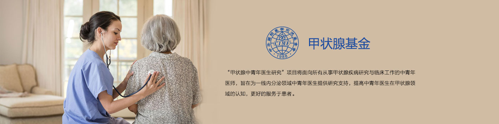
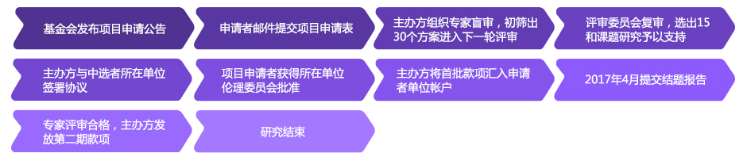
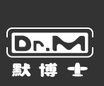

<!DOCTYPE html PUBLIC "-//W3C//DTD XHTML 1.0 Transitional//EN" "http://www.w3.org/TR/xhtml1/DTD/xhtml1-transitional.dtd">
<html xmlns="http://www.w3.org/1999/xhtml">
<head>
<meta http-equiv="Content-Type" content="text/html; charset=utf-8" />
<title>科研基金-申请流程</title>
<link rel="stylesheet" type="text/css" href="res/css/css.css" />
<script type="text/javascript" src="res/js/jquery-1.8.2.min.js"></script>
<script type="text/javascript" src="res/js/index.js"></script>
</head>
<body>
	<div class="header">
    	<div class="logo">
        	<a href="">
            	
            </a>
        </div>
    	<div class="search_box">
        	<input type="text" class="txt" value="请输入您要检索的内容" style="color:#666" onblur="if(!value){value=defaultValue;this.style.color='#666'}" onfocus="if(value==defaultValue){value='';this.style.color='#000'}">
            <input type="button" class="btn" />
        </div>
        <!--未登录状态-->
        <div class="user_login" style="display:block;">
        	<a href="15_regist.html">注册 Register</a>
         	<a href="14_login.html">登录 Login</a>
         	<a href="" class="mt_26"></a>
        	<a href="" class="mt_26"></a>
        </div>
        <!--登录状态-->
        <!--
        <div class="user_login" style="display:none;">
        	<a href="">退出Quit</a>
            <a href="">Hi 张尔洛</a>
        </div>
        -->
    </div>
    <div class="nav">
    	<ul class="left">
        	<li>
            	<a href=""><span>首页</span>Home</a>
            </li>
            <li>
            	<a href=""><span>公开课</span>Courses</a>
                <ul>
                	<li>
                    	<a href=""><span>临床科研</span>Clinical Research</a>
                    </li>
                    <li>
                    	<a href=""><span>人文素养</span>Humanity</a>
                    </li>
                    <li>
                    	<a href="" class="bor_no"><span>疾病健康</span>Disease</a>
                    </li>
                </ul>
            </li>
            <li>
            	<a href="" class="cur"><span>科研基金</span>Fundings</a>
                <ul>
                	<li>
                    	<a href=""><span>心血管基金</span>Cardiovascular</a>
                    </li>
                    <li>
                    	<a href=""><span>生殖基金</span>Fercility</a>
                    </li>
                    <li>
                    	<a href=""><span>肿瘤基金</span>Cancer</a>
                    </li>
                    <li>
                    	<a href=""><span>糖尿病基金</span>Diabetes</a>
                    </li>
                    <li>
                    	<a href="" class="bor_no"><span>甲状腺基金</span>Thyroid</a>
                    </li>
                </ul>
            </li>
            <li>
            	<a href=""><span>患者援助</span>PAP</a>
                <ul>
                	<li>
                    	<a href=""><span>肿瘤</span>Oncology</a>
                    </li>
                    <li>
                    	<a href="" class="bor_no"><span>生殖</span>Fercility</a>
                    </li>
                </ul>
            </li>
            <li>
            	<a href=""><span>最新动态</span>News</a>
                <ul>
                	<li>
                    	<a href=""><span>会议动态</span>meetings dynamics</a>
                    </li>
                    <li>
                    	<a href="" class="bor_no"><span>基金动态</span>Fund dynamics</a>
                    </li>
                    <li>
                    	<a href="" class="bor_no"><span>PAP动态</span>PAP dynamics</a>
                    </li>
                </ul>
            </li>
        </ul>
        <div class="right">
            <a href="" class="a_icon1"></a>
            <a href="" class="a_icon2"></a>
        </div>
    </div>
    <div class="content">
        <div class="flow_top"></div>
        <div class="content_body">
        	<div class="apply_flow">
                <div class="one_flow flow_txt1_1">
                    <h4>项目背景：</h4>
                    <p class="tx_2">甲状腺疾病已经成为内分泌领域的第二大疾病,但是国内关于甲状腺领域的研究较少，为进一步促进中青年医师在甲状腺领域的基础和临床研究，推进我国甲状腺诊疗技术的发展，加强甲状腺规范化诊疗与临床用药的经验交流，促进药物治疗的合理化和规范化，提高甲状腺规范化诊疗治疗效果、使更多患者远离甲状腺引发的疾病负担,中华国际医学交流基金会将主办“甲状腺中青年医生研究”项目支持国内中青年医生自由申报与甲状腺相关的研究课题，培养中青年医师中的高水平研究人才，推动中国甲状腺领域研究水平的提升</p>
                    <p class="tx_2">“甲状腺中青年医生研究”基金项目由默克公司供资。</p>
                </div>
                <div class="one_flow flow_txt1_2">
                    <h4>研究时限：</h4>
                    <p>接受资助的研究原则上在获得款项后的一年内完成，最长不超过一年半。</p>
					<h4>申请说明：</h4>
                    <p>具备研究资质的研究单位中，中青年医生均具备项目申请资格。款项接受者必须在中国境内进行该科学研究。2015年中标医院不得再次参与。</p>
                    <p>1. 申报时间</p>
                    <p class="pl_20">项目申请时间为2016年5月至2016年7月。</p>
                    <p>2. 申报方法</p>
                    <p class="pl_20">项目申请人需在申报截止日之前将研究项目申请表发送到<a href="">TD_2016@126.com</a>，邮件注明“甲状腺中青年医生　 研究”项目。</p>
                </div>
                <div class="apply_info">
                    <h4>基金评审：</h4>
                    <div>
                        <h5>1. 评审流程</h5>
                        <p>所有申请将由独立的评审委员会进行科学评审，秉承公平、公正、公开的原则择优支持。以下为评审流程表：</p>
                        <p class="tx_0"></p>
                    </div>
                    <div>
                        <h5>2. 评审委员会</h5>
                        <p>中华国际医学交流基金会设立评审专家委员会，经认真遴选及征集专家意见，邀请甲状腺领域专家组成评审委员会。</p>
                        <p>为保证评审的公平公正，避免利益冲突，如果评审专家有意申请基金，需向评审委员会提出回避。</p>
                    </div>
                    <div>
                        <h5>3. 评审内容</h5>
                        <p>首先评估申请人是否具备申请资格，申请项目的研究方向是否与研究方向一致，申请人提供的申请文件是否完整。材料不完整的申请将不能参加下一步的评审。</p>
                        <p>评审委员会将主要从以下几方面对研究方案进行评审：</p>
                        <ul>
                            <li>研究的科学意义（具有较强科学价值，前景广阔）</li>
                            <li>研究立题的创新性</li>
                            <li>研究内容（研究重点突出，所选择的关键问题准确）</li>
                            <li>研究设计的合理性（总体研究方案设计合理，可行性较强）</li>
                            <li>项目组人员研究能力（研究团队的科研能力、研究基础、人员组成及实验条件等）</li>
                            <li>研究经费和研究时长也会作为评审考虑的因素之一。</li>
                        </ul>
                    </div>
                    <div>
                        <h5>4. 基金优先考虑资助以下研究方向</h5>
                        <ul>
                            <li>探讨亚甲减对包括心血管、神经等各系统以及妊娠结局和子代的影响</li>
                            <li>备孕或妊娠妇女亚临床甲减筛查和干预研究</li>
                            <li>探讨甲状腺疾病在妊娠期的治疗</li>
                            <li>甲减或甲亢与糖尿病</li>
                            <li>自身免疫性甲状腺疾病的治疗</li>
                            <li>甲状腺结节、甲状腺癌的流行病学（发病特点、流行趋势）</li>
                            <li>影响分化型甲状腺癌预后的因素（基因突变、分子生物学标志物、淋巴结转移等）、分化型甲状腺癌的治疗（如TSH抑制治疗）及分化型甲  　　　状腺癌患者的生活质量评估  </li>
                        </ul>
                    </div>
                    <div>
                        <h5>5. 评审结果公布</h5>
                        <p>所有申请人将会收到其项目审批结果的邮件，最终获得基金支持的项目将通过邮件及电话形式确认。</p>
                        <p>最终解释权归中华国际医学交流基金会所有。</p>
                    </div>
                </div>
                <div class="long_btn"><a href="http://www.csco.org.cn/cat/128.html">申请基金</a></div>
            </div>
        </div>
    </div>
    <div class="bottom">
    	<ul class="clearfix">
        	<li>
            	<a href="">发现课程 / Find Courses</a>
            </li>
            <li>
            	<a href="">关于我们 / About us</a>
            </li>
            <li>
            	<a href="">联系我们 / Contact us</a>
            </li>
            <li>
            	<a href="">关注我们 / Follow us</a>
            </li>
        </ul>
    </div>
    <div class="footer">
    	<div class="clearfix">
            <div class="left">
                
            </div>
            <div class="left clearfix">
                <ul class="wid1 clearfix">
                    <li>
                        <a href="">公开课</a>
                    </li>
                    <li>
                        <a href="">Courses</a>
                    </li>
                    <li>
                        <a href="">科研基金</a>
                    </li>
                    <li>
                        <a href="">Fundings</a>
                    </li>
                    <li>
                        <a href="">患者援助</a>
                    </li>
                    <li>
                        <a href="">PAP</a>
                    </li>
                    <li>
                        <a href="">最新动态</a>
                    </li>
                    <li>
                        <a href="">News</a>
                    </li>
                </ul>
                <ul class="wid2 clearfix">
                    <li>版权声明</li>
                    <li>Copyright statement</li>
                    <li>常见问题</li>
                    <li>Common problem</li>
                </ul>
                <ul class="wid3 clearfix">
                    <li>微信号：默博士讲堂</li>
                    <li>WeChat: Dr M </li>
                    <li>网址：drm.medlive.cn</li>
                    <li>ID: drm.medlive.cn</li>
                </ul>
            </div>
            <div class="ewm_box">
                
                <p>关注微信</p>
                
                <p>下载APP</p>
            </div>
        </div>
        <div class="center">京公网安备11010502021568京ICP备08010023号-1© 2005-2014 </div>
    </div>
</body>
</html>
